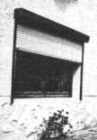
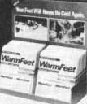
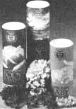
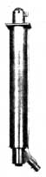
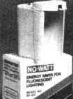
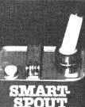
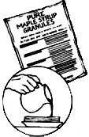
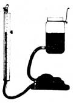
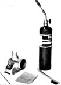
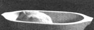

Mom's Marketplace
By the Mother Earth News editors
January/February 1984
A listing of new and noteworthy products that might interest MOTHER's readers.
CLOSED FOR THE WINTER:
Parishutters (Parishutter, Inc., Dept: ME, 201 N. Wells St., Chicago, 111. 60606) are exteriormounted rolling shutters that not only reduce winter heat transfer, but also help protect against severe weather, vandalism, and noise . . . while increasing privacy. Made of rigid PVC slats, Parish utters have an anodized-aluminum bottom slat with an automatic lacking device that prevents opening from the outside. They can even be partially opened while remaining locked-to control light and air circulation. For more information or the name of a dealer near you, write the company or call 312/7266126.
AHHH . . . WARM FEET:
Do you suffer from that chronic wintertime ailment "cold tootsies"? You should give Warm Feet, a natural herbal formula, a try! Sprinkle this powder made of capsicum, zingiber, and brassica seeds-into your socks, and it'll keep your feet warm all day . . . or as long as you want. The product, marketed through Divajex (the same company that makes Blue-Ice for keeping things cold), was developed by Samantha Stevens in her Aspen, Colorado kitchen. You should find Warm Feet in ski shops and sporting goods stores (or call 800/854-0175 for ordering information).
TALC-FREE BODY POWDERS:
People sensitive to talcum powder will be glad to know that a small company in California is making pure herbal skin-care products. All Sumeru Garden Herbal Body Powders have arrowroot as a base . . . with added s cents from herbs and spices. Lavender Rose incorporates French lavender and roses . . . Eastern Forest contains sandalwood . . . and Loving Hands (made especially for babies) is very gently scented. Send $3.50 for a three-ounce size, or 454 for each quarter-ounce trial size of your choice to Sumeru Garden Herbals, Dept. ME, P.O. Box 2847, Santa Cruz, Calif. 95063.
GIVE ME SOME AIR:
The McKillop Heat Exchanger Chimney (Energy Saver Products, Dept. ME, 411 N. Minnesota Ave., Sioux Falls, S.D. 57102) will expand the functions performed by your chimney. It's especially useful in snug, newer homes that suffer from a lack of fresh air in wintertime. First, the McKillop saves energy by reclaiming heat that normally exits out the smokestack. Second, the multipurpose flue reduces air stagnation by drawing cool air from the outside, warming it, and circulating it back through the existing furnace or woodstove. The company claims that the heat exchanger chimney saves enough in yearly heating bills to pay for itself in three years or less. Write E.S.P. for more details.
NO WASTED WATTS:
Now, there's an energy-saver designed for fluorescent cent lights, and it's as easy to use as those little "juice reducer" rings you put on incandescent bulbs. No-Watt, which snaps onto the end of one of the tubes in a fixture, is a compact electrical device made of Mylar. Correct Phase Electronics, Inc. (Dept. ME, 1340 Hill St., El Cajon, Calif. 92020), which markets this product, claims that if the No-Watt doesn't reduce power consumption on each fluorescent lighting fixture by 30% you can get your money back. Each unit costs $14.95 plus $1.50 for shipping and handling, and fits most 4' and 8' fluorescent tubes. Order from the company or call 8001227-8321.
PERFECT POURING
There's now a fuel pour spout that has a no-spill, no overfill tip-it's similar in function to the self shutting gas nozzles at service stations-and C.X. Products (Dept. ME, P.O. Box 355, Salem, Ohio 44460) sells it. The tip closes automatically when you fill a tank and seals the fuel can it's on. You should be able to find this safe and useful item in major hardware stores or wherever fuel cans are sold. If you're unable to locate the Automatic Fuel Spout locally, write Clay Tice at C.X. Products for advice.
HI-TECH MAPLE SYRUP
Oh boy, maple syrup granules! A new process evaporates the water from real maple syrup to make these versatile and tasty crystals. The unadulterated end product is ideal for food reserves or camping trips: You can use Pure Maple Syrup Granules sprinkled on toast, yogurt, or fresh fruit . . . for baking . . , or simply reconstituted into liquid maple syrup. Green Mountain Endeavors (Dept. ME, 12 South View Dr., South Burlington, Vt. 05401) claims that the granules contain higher amounts of potassium, calcium, magnesium, phosphorus, and manganese than honey, yet have only a tenth as much sodium. Send $5.50 plus $1.50 postage for a 14-ounce bag.
HOME WELDER
Did you ever try to level a set of deck supports when those posts were all six or seven feet high and five or six feet apart? How about making sure that the concrete floor for your new garage was perfectly horizontal? If undertaking such projects all alone has you stumped, try the Level-Master (PNS Engineering Co., Dept. ME, 101 McDonald Dr., Rockingham, N.C. 28379). The company claims that, using this unique instrument, one person can level points up to 100 feet apart . . . over obstacles, around corners, while standing high on a ladder, or even when down in a ditch. The complete package goes for $19.95 plus $2.00 for shipping and handling.
HOME WELDER:
We've experimented with the Lumiweld aluminum repair process here in our research department and find that, on a small scale at least, it works surprisingly well. It's especially convenient for the do-it-yourselfer because it doesn't require lots of expensive equipment: A gas-fueled torch will heat the metal enough for you to use the special rods that are the basis of this unconventional welding process. A $15 Lumiweld kit includes four rods (72 inches' worth), a stainless steel "toothbrush" for cleaning the surface, a Lumibrade (a stainless steel wire pick sometimes needed for scraping away oxides), and full instructions. Order from Alumismiths, Inc., Dept. ME, P.O. Box 517, DeLand, Fla. 32720.
|
 |
 |
 |
|
 |
 |
 |
|
 |
 |
 |
|
 |
 |
|